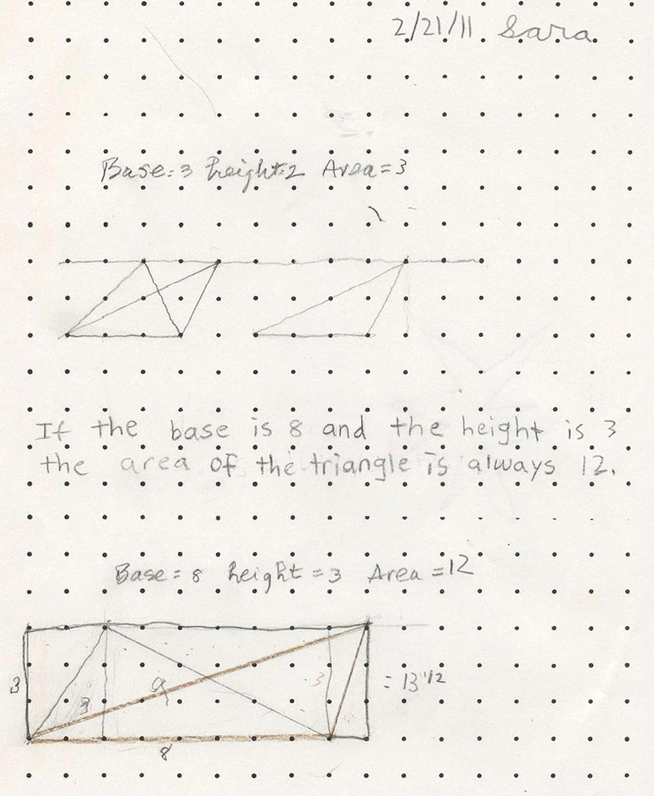
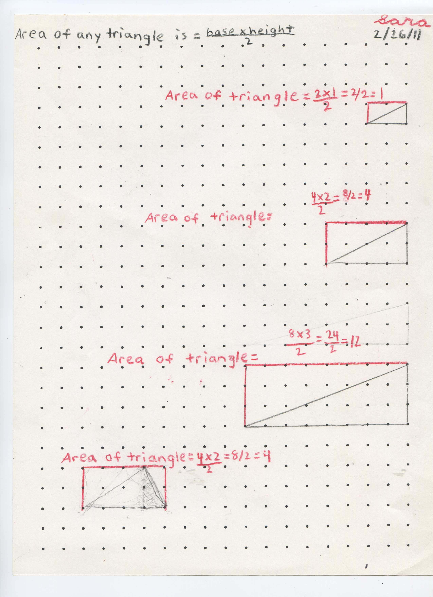

Sara (age 10), finds: If the base is 8 and the height is 3, the area of the triangle is always 12, +.
This started from seeing Dani Novak's work using GeoGebra in which he calls the lesson "Watch and Do". Don thought he could do this lesson, without GeoGebra, on graph paper, where "the student figures things out". What do you think?

Sara, a week later, finds the area of any triangle is the base*height /2 .

Fine work, Sara!